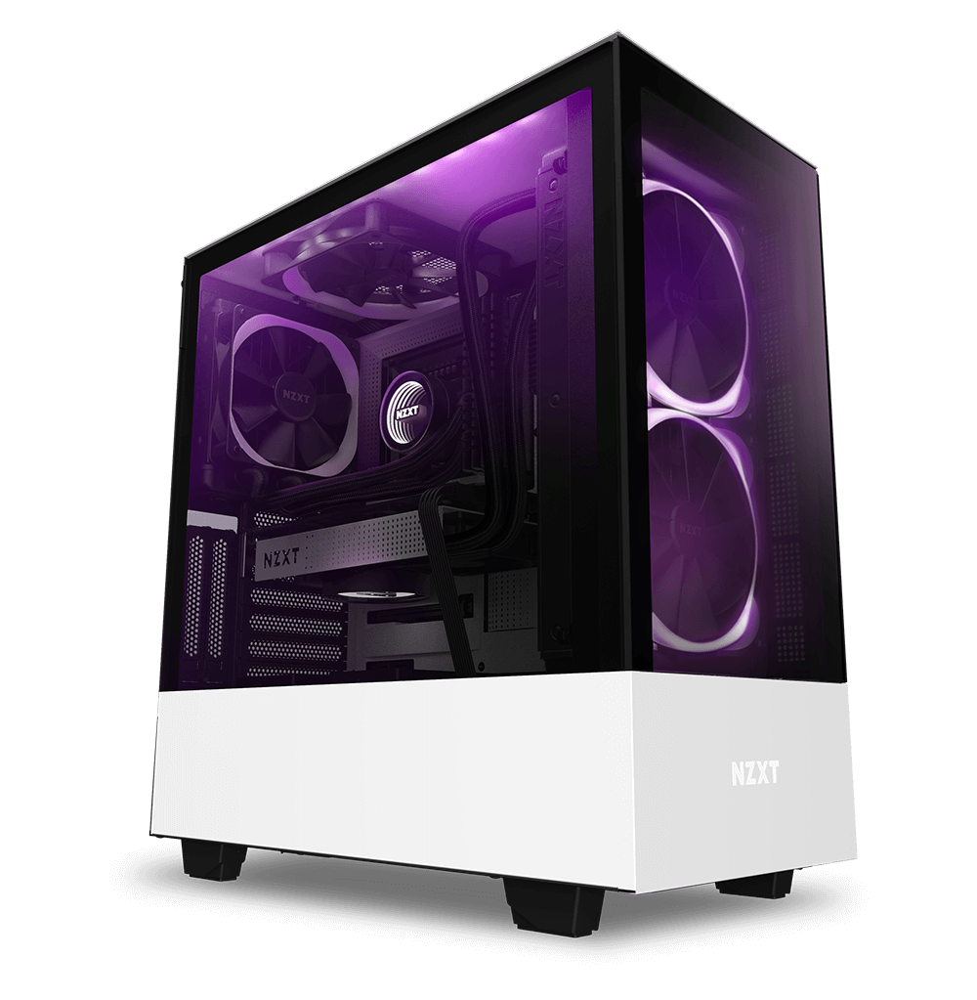

RAČUNALNIK
Računalnik je naprava ali sistem, ki je sposoben izvajati zaporedje operacij (algoritem). Pri tem procesira informacije v obliki numeričnih operacij. Ker se zaporedje izvajanja operacij s spremembo programa lahko spremeni, lahko računalnik uporabljamo za različne namene.
Računalnik ima vsaj en element za procesiranje-centralno procesno enoto (CPE) in spomin. CPE izvaja aritmetične in logične operacije. Krmilna enota skrbi za zaporedje izvajanja operacij in ukazov. Periferne naprave pa omogočajo branje podatkov iz zunanjih virov.
Računalnik sestavljajo različne komponente:
